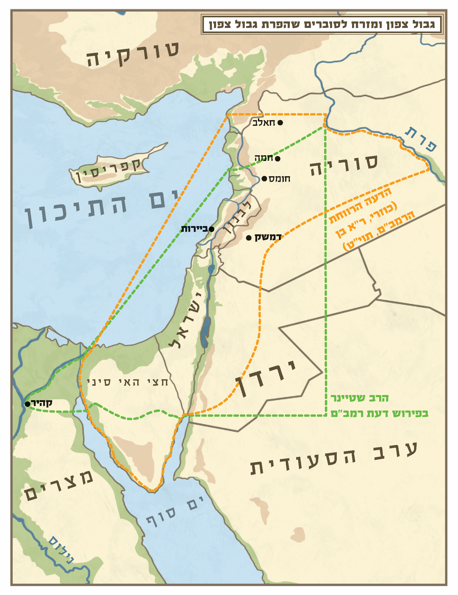

מצוות ישוב הארץ מורכבת משני חלקים, מצווה כללית ומצווה פרטית. המצווה הכללית מוטלת על כלל ישראל, ועניינה: כיבוש הארץ ויישובה על ידי עם ישראל. והמצווה הפרטית מחייבת כל יחיד ויחיד מישראל לגור בארץ ולהשתתף בישובה. תחילה נעסוק בחלק הראשון, היינו במצווה המוטלת על כלל האומה, לכבוש את הארץ, לשלוט בה ולהתיישב בה. וכך כתב הרמב"ן (השמטות לספר המצוות מצווה ד): "נצטווינו לרשת את הארץ אשר נתן הא-ל יתעלה לאבותינו לאברהם ליצחק וליעקב, ולא נעזבנה ביד זולתנו מן האומות או לשממה, וזהו שנאמר (במדבר לג, נג-נד): וְהוֹרַשְׁתֶּם אֶת הָאָרֶץ וִישַׁבְתֶּם בָּהּ כִּי לָכֶם נָתַתִּי אֶת הָאָרֶץ לָרֶשֶׁת אֹתָהּ. וְהִתְנַחַלְתֶּם אֶת הָאָרֶץ..."
כשנדייק בדבריו נמצא, שישנם שני צדדים במצווה הכללית של ישוב הארץ. האחד שהארץ תהיה תחת שלטון ישראל ולא תחת שלטון זר. אולם בכיבוש הארץ לבד עדיין המצווה לא נשלמת, וצריך להוסיף את הצד השני, שהוא ליישב את כל הארץ בפועל, באופן שלא תישאר שממה. וברור שאין די בהתיישבות עירונית ובבניית בתים בלבד, הואיל וכך ישארו בארץ חלקים שוממים, אלא המצווה היא להפריח את כל שיממות הארץ. וכל זמן שישנם מקומות בארץ שנותרו שוממים, עדיין מוטלת עלינו מצווה לטעת בארץ עוד עצים ולבנות עוד בתים.
ומדגיש הרמב"ן שמצווה זו נוהגת בכל הדורות, שבכל הדורות מצווים ישראל לרשת את הארץ וליישבה ולא רק בעת כיבוש הארץ אחר יציאת מצרים. אלא שבמשך דורות רבים היינו במצב של אונס, שהיינו בגלות בגוף ובנפש, ולא יכולנו לקיים את המצווה. בחסדי ה', בדורות האחרונים, החל ה' להצמיח את ישועתנו, ומצבנו השתנה ואנו יכולים לקיים את המצווה.
מדרגות מדרגות ישנן בשותפות של כל יחיד ויחיד במצוות ישוב הארץ הכללית. כל יהודי שגר בארץ ישראל הוא שותף במצוות ישוב הארץ, שעל ידי ישיבתו, אחיזתו של עם ישראל בארצו מתחזקת. ומי שהולך לגור במקומות שוממים יחסית, כנגב וכערבה, יש לו חלק גדול יותר במצוות ישוב הארץ, שעל ידי ישיבתו הארץ מתיישבת ואינה נעזבת לשממה.
ומי שמתיישב ביהודה ושומרון, מקיים בישיבתו מצווה גדולה יותר, מפני שבישיבתו יש תרומה כפולה: ראשית, למען הגברת שלטון ישראל במקומות שהערבים רוצים לגזול מאתנו. שנית, למען הפרחת השממה. וככל שמדובר בישוב הנמצא במקום שומם יותר מיהודים, ושונאינו מתאמצים יותר לכובשו, כך המצווה של הגרים בו גדולה יותר. וכבר אמרו חז"ל (ברכות ה, א): ארץ ישראל נקנית בייסורים, ולפי גודל הצער גודל השכר (אבות ה, כג).
מיוחדת במינה מצוות ישוב הארץ, שבעצם זה שיהודי מתגורר במקום בעל ערך התיישבותי הוא מקיים מצווה. שבכל שאר המצוות צריך לעשות מעשה כדי לקיימן, למשל: להניח תפילין, לתת צדקה, להתפלל, אולם במצוות ישוב הארץ עצם המגורים - מצווה. נמצא שכל מי שזוכה לגור בארץ ישראל ועוד יותר ביישובי יש"ע, חיי השגרה שלו, כאכילה, שינה ואף כל נשימה ונשימה, הופכים למציאות של מצווה.
אף המתגוררים בחוץ לארץ ותורמים כספים למען ההתיישבות בארץ ישראל שותפים במידה מסוימת במצוות ישוב הארץ הכללית, אלא שהם שותפים במצווה בממונם ואינם מקיימים את המצווה בגופם. וכן תושבי הארץ שתומכים ביישובי יש"ע שותפים במצווה הכללית של יישוב אותם המקומות המקודשים, ולפי מידת תמיכתם כך גודל מצוותם.
בנוסף למצווה הכללית, שהארץ תהיה בריבונות ישראל, יש מצווה על כל יהודי ויהודי שיגור בארץ ישראל. לפיכך, גם בזמן שהארץ תהיה כולה ביד ישראל והמוני יהודים ימלאוה, מנהר מצרים ועד נהר פרת, עדיין תהיה מצווה על כל יהודי לגור בארץ.
ואפילו בזמן שגויים שלטו בארץ, ונראה היה לכאורה שאין סיכוי שיהודי נוסף שיגור בארץ יועיל למצווה הכללית, מכל מקום היתה מצווה פרטית על כל יהודי שיגור בארץ. וכפי שאמרו חכמים (כתובות קי, ב): "לעולם ידור אדם בארץ ישראל אפילו בעיר שרובה עובדי כוכבים ואל ידור בחוצה לארץ ואפילו בעיר שרובה ישראל, שכל הדר בארץ ישראל דומה כמי שיש לו א-לוה וכל הדר בחוצה לארץ דומה כמי שאין לו א-לוה, שנאמר: לתת לכם את ארץ כנען להיות לכם לאלוהים". וכן אמרו בתוספתא (ע"ז ה, ב). וכן פסק הרמב"ם (הלכות מלכים ה, יב): "לעולם ידור אדם בארץ ישראל, אפילו בעיר שרובה גויים, ואל ידור בחוץ לארץ ואפילו בעיר שרובה ישראל. שכל היוצא לחוצה לארץ כאילו עובד עבודה זרה".
וכן מובא במדרש תנאים (ספרי ראה נג), שבתקופה שלאחר חורבן בית המקדש השני, עת אשר שלטו הרומאים בארץ ביד קשה ואכזרית, ורבים מבני העם עזבו את הארץ מפני הרעב והחרב, היו כמה תנאים שרצו לצאת לחוץ לארץ. וכך מסופר: מעשה ברבי יהודה בן בתירא ורבי מתיא בן חרש ורבי חנניה בן אחי רבי יהושע ורבי נתן, שהיו יוצאים לחוץ לארץ, והגיעו לפלטיא, וזכרו את ארץ ישראל, זקפו עיניהם וזלגו דמעותיהם וקרעו בגדיהם, וקראו את המקרא הזה (דברים יא, לא-לב): "וִירִשְׁתֶּם אֹתָהּ וִישַׁבְתֶּם בָּהּ. וּשְׁמַרְתֶּם לַעֲשׂוֹת אֵת כָּל הַחֻקִּים וְאֶת הַמִּשְׁפָּטִים". אמרו: "ישיבת ארץ ישראל שקולה כנגד כל המצוות שבתורה", וחזרו ובאו להם לארץ ישראל.
ואף שבעת שהיה שלטון נכרי בארץ לא זכינו לקיים את המצווה הכללית, ש"הארץ תהיה בידינו ולא ביד אומה אחרת", מכל מקום כל יהודי שהתגורר בארץ באותם הזמנים קיים במידה מסוימת גם את המצווה הכללית, מפני שעצם ישיבתו בארץ סייעה לשמירת הזיקה שבין ישראל לארצו במשך שנות הגלות הארוכות. בנוסף לכך, ישיבתו בארץ שימשה בסיס להרחבת ההתיישבות לקראת ריבונות ישראלית. ואם עשה ופעל בצורה מכוונת למען מטרה זו, כמו שעשו תלמידי הגר"א שעלו לארץ במסירות נפש ובנו את חורבותיה כדי לקרב את הגאולה, נעשה שותף ממש במצווה הכללית.
כלל נקוט בידינו, "וחי בהם ולא שימות בהם" (יומא פה, ב). כלומר, התורה ניתנה לאדם כדי שיחיה בה, ולא שימות על ידה. ועל פי זה נקבעה ההלכה המפורסמת: "פיקוח נפש דוחה שבת". כלומר, מחללים שבת כדי להציל חולה מסוכן. ולא רק השבת נדחית מפני פיקוח נפש אלא כל מצוות התורה נדחות מפני פיקוח נפש. לפיכך, אם יאמרו גויים לאחד מישראל, לעשות מעשה שיש בו עבירה על אחת ממצוות התורה, יעבור ולא ייהרג. חוץ משלוש עבירות: עבודה זרה, גילוי עריות ושפיכות דמים. שאם יאמרו לאדם, הרוג את חברך או שנהרוג אותך, ייהרג ואל יהרוג. וכן אם יאמרו לו עבוד עבודה זרה פלונית או שנהרוג אותך, ייהרג ולא יעבור, וכן בגילוי עריות. אבל בכל שאר המצוות, אין לאדם למסור את נפשו כדי לקיימן (סנהדרין עד, א).
אמנם כל זה אמור לגבי מצוות של יחיד, אולם מצוות ישוב הארץ שהיא מצווה שמוטלת על כלל ישראל דוחה פיקוח נפש. שהרי מעצם זה שהתורה ציוותה אותנו לכבוש את הארץ למדנו שיש לסכן נפשות כדי לקיימה, שאין מלחמה ללא אבדות, ובוודאי לא התכוונה התורה שנסמוך על הנס. אלא שמצוות ישוב הארץ שהיא מצווה כלל ישראלית, מחייבת מסירות נפש ממש (מנחת חינוך תכה תרד, משפט כהן קמג, אגרות ראי"ה ח"ג תתקמד). וכך נהג עם ישראל בכיבוש הארץ בימי יהושע ובימי דוד, וכן בעת הקמת בית המקדש השני ולאחר מכן בתקופת מלכות בית חשמונאי.
אולם צריך לסייג מעט את הדברים. גם על מצווה כללית חל הכלל "וחי בהם" ולא שימות בהם, אלא שהואיל והמצווה היא כללית, גם החשבון הוא של כלל האומה ולא של חיילים פרטיים. ולכן, במצב שישנה סבירות גבוהה שלא נצליח במלחמה, ועוד חס וחלילה אנו עלולים להפסיד את הנחלות שכבר בידינו וחיי האומה כולה יהיו מוטלים על המאזניים, במצב כזה אין מצווה לפתוח במלחמה לכיבוש הארץ. התורה היא תורת חיים ולא תורה שמצווה לקיים מלחמת התאבדות. אבל כאשר ישנה סבירות גבוהה שננצח, אע"פ שוודאי הוא שכמה מאתנו יאבדו את חייהם, מצווים אנו לכבוש את הארץ, ולכל הפחות לשמור על מה שכבר בידינו.
חובה לציין כאן, שכל עם שאינו מוכן להלחם במסירות נפש על ארצו חושף את בניו לסכנת נפשות מצד שכניו. שכל עם שלא יצליח לגייס את בניו כדי שילחמו במסירות נפש על ארצו ומולדתו, סופו שיכבש, ובניו ובנותיו יהיו למשיסה. לפיכך המצווה להילחם על ארץ ישראל במסירות נפש תואמת בדרך כלל את השיקולים של הצלת חיי אדם. כך שהנלחם על הגנת גבולות ישראל מקיים שתי מצוות, ישוב הארץ והגנת ישראל.
ביום ה' באייר, חמשת אלפים תש"ח למניין שאנו מונים לבריאת העולם, בעת הכרזת המדינה, זכה עם ישראל אחר אלפיים שנות גלות לחזור ולקיים את מצוות ישוב הארץ. על ידי הכרזת המדינה והחלת הריבונות על חלקים מארץ ישראל, התחלנו לקיים את המצווה שהארץ תהיה בידינו ולא ביד אומה אחרת. ואף שגם לפני הקמת המדינה, כל יהודי ויהודי שגר בארץ ישראל, קיים בעצמו מצווה אישית של ישיבה בארץ. מכל מקום את עיקר המצווה, שהיא המצווה הכללית, שהארץ תהיה בידינו ולא ביד אומה אחרת, עדיין לא קיימנו. גם בזמנים שגרו בארץ יהודים רבים, כל זמן שהארץ היתה תחת שלטון זר, את המצווה הכללית - לא זכינו לקיים.
וכן מצינו שתקנו חכמים, שכל הרואה ערי יהודה בחורבנן, יאמר: "עָרֵי קָדְשְׁךָ הָיוּ מִדְבָּר" ויקרע את בגדו. והכלל הוא, שאפילו אם רוב תושבי אותן הערים הם יהודים, כל זמן שהשלטון ביד גויים, הרי הן נחשבות חריבות, וקורעים על ראייתן. ואם היו תחת ריבונות ישראל, אפילו אם רוב תושביהן גויים, אין הן נחשבות חריבות, ואין קורעים על ראייתן (בית יוסף וב"ח או"ח תקסא, מ"ב תקסא, ב).
וכך הרב צבי יהודה הכהן קוק זצ"ל היה מדגיש, שביום העצמאות זכינו לקיים את מצוות ישוב הארץ. ופעם במסיבת יום העצמאות בישיבת 'מרכז-הרב', דרש אחד הרבנים הגאונים, שיש ערך גדול להקמת המדינה, שמאז הקמתה התרבו הישיבות, ויותר קל לשומרי תורה לקיים מצוות, לפיכך יש לשמוח ולהודות לה' על הקמת המדינה. ומורנו ורבנו הרב צבי יהודה טרח להוסיף ולהדגיש כי עצם הקמת המדינה הוא הדבר הגדול, שהוא עצמו קיום אחת המצוות הגדולות שבתורה. ומתוך כך בוודאי יתקיימו עוד מצוות, שמצווה גוררת מצווה. לסיכום, הקמת המדינה היא ערך לעצמו ולא רק אמצעי לקיום מצוות אחרות. ולא זו בלבד, אלא שהקמת המדינה והפרחת השממות היא שלב משמעותי בגאולתם של ישראל.
במשך דורות רבים מחמת האונס לא יכולנו לקיים את המצווה, מפני שלא היה לנו צבא וכלי נשק שיאפשרו לנו לכבוש את ארצנו ולקיים בה שלטון. נמצא כי הקמת הכוח הצבאי של ישראל לפני הקמת המדינה, וביצורו וביסוסו בהקמת צה"ל, מאפשרים לנו לקיים את המצווה. אם כן עצם קיומו של הצבא הוא אמצעי הכרחי לקיום מצוות ישוב הארץ, בנוסף למצווה של הצלת ישראל מיד שונאיהם. וכך יהיה עד שיגיעו ימים מתוקנים, ותתקיים נבואת ישעיהו (ב, ב-ד): "וְהָיָה בְּאַחֲרִית הַיָּמִים נָכוֹן יִהְיֶה הַר בֵּית ה' בְּרֹאשׁ הֶהָרִים וְנִשָּׂא מִגְּבָעוֹת וְנָהֲרוּ אֵלָיו כָּל הַגּוֹיִם. וְהָלְכוּ עַמִּים רַבִּים וְאָמְרוּ לְכוּ וְנַעֲלֶה אֶל הַר ה' אֶל בֵּית אֱלוֹהֵי יַעֲקֹב וְיֹרֵנוּ מִדְּרָכָיו וְנֵלְכָה בְּאֹרְחֹתָיו, כִּי מִצִּיּוֹן תֵּצֵא תוֹרָה וּדְבַר ה' מִירוּשָׁלָיִם. וְשָׁפַט בֵּין הַגּוֹיִם וְהוֹכִיחַ לְעַמִּים רַבִּים, וְכִתְּתוּ חַרְבוֹתָם לְאִתִּים וַחֲנִיתוֹתֵיהֶם לְמַזְמֵרוֹת, לֹא יִשָּׂא גוֹי אֶל גּוֹי חֶרֶב וְלֹא יִלְמְדוּ עוֹד מִלְחָמָה".
כפי שלמדנו, אמרו חכמים על מצוות ישוב הארץ (ספרי ראה נ"ג, תוספתא ע"ז ה, ב): "ישיבת ארץ ישראל שקולה כנגד כל המצוות שבתורה". ואמנם על עוד כמה מצוות אמרו שהן שקולות כנגד כל המצוות, מכל מקום מבחינה הלכתית יש במצוות ישוב הארץ עדיפות על כל שאר המצוות, שהיא היחידה שנצטווינו לקיימה במסירות נפש, בכיבוש הארץ ושמירתה מידי אויבינו (כמבואר לעיל הלכה ד).
בנוסף לכך, היא היחידה שדוחה איסור 'שבות' של חכמים בשבת. לא כאן המקום לבאר מהו איסור "שבות של חכמים", רק נזכיר שחכמים עשו סייגים לתורה, כדי שלא יבואו לעבור על איסורי תורה. והסייגים שקבעו בדיני שבת נקראים 'שבות'. וכל כך העמידו את דבריהם, עד שאפילו אם תיווצר התנגשות בין קיום מצווה מהתורה לאיסור 'שבות', קבעו חכמים שלא לקיים את המצווה ובלבד שלא לעבור על 'שבות', מפני שאם יעברו על הסייגים, לבסוף יגיעו לחילול שבת גמור. ולכן, למשל, אם צריכים לקיים ברית מילה ביום השבת, וכדי לקיים את הברית צריכים לטלטל את הסכין במקום שאסור לטלטל מדברי חכמים, מבטלים את המילה ואין עוברים על דברי חכמים.
יתר על כן, כדי למנוע חשש איסור בשבת, קבעו חכמים שאם חל יום ראש השנה בשבת, לא יתקעו בשופר, כדי שלא יבואו לטלטל את השופר ארבע אמות ברשות הרבים ויעברו על איסור תורה. וכן אם חל יום ראשון של חג הסוכות בשבת (שבו מצווה ליטול לולב מהתורה בכל מקום), קבעו חכמים שלא ליטול לולב, כדי שלא יבואו לטלטל את הלולב ארבע אמות ברשות הרבים ויעברו על איסור תורה. נמצא שכל ישראל מתבטלים ממצוות עשה מהתורה של תקיעת שופר ונטילת לולב מפני איסור 'שבות' של חכמים.
ורק לשם מצווה אחת, הלא היא מצוות ישוב הארץ, ביטלו חכמים איסור 'שבות'. שאם התאפשר ליהודי לקנות בית מידי נכרי ביום השבת, מותר לו לבצע את הקניין ולצוות על הגוי לכתוב עבורו שטר בשבת, ולהראות לגוי היכן הכסף מונח כדי שייקחנו. ולא מדובר כאן על הצלת הארץ כולה אלא על גאולת בית אחד בלבד, וכדי לגואלו התירו חכמים לעבור על איסורים מדבריהם, מה שלא התירו במצוות אחרות (או"ח שו, יא).
שאלה: מה הדין כאשר הבן או הבת רוצים לעלות לארץ ישראל והוריהם מתנגדים לכך בתוקף, האם מצד מצוות כיבוד הורים ראוי לשמוע בקולם ולהישאר בגולה או שמצוות ישוב הארץ עדיפה ועליהם לעלות ארצה?
תשובה: תנאי יסודי במצוות כיבוד הורים הוא, שכיבוד ההורים לא יסתור שום מצווה ממצוות התורה, ואפילו לא מצווה מדברי חכמים. ואם אמרו לו הוריו לעבור על דבר מדברי התורה, או תבעו ממנו שלא יקיים מצווה ממצוות התורה, אסור לו לשמוע בקולם, משום שגם הם מצווים בכבוד המקום ובקיום התורה (שו"ע יו"ד רמ, טו).
אם כן, הואיל וישנה מצווה לגור בארץ, אין לבן לשמוע בקול הוריו, ועליו לעלות לארץ גם בניגוד לרצונם. קל וחומר במצוות ישוב הארץ, שעליה אמרו חז"ל (ספרי ראה נ"ג) ששקולה כנגד כל המצוות (שו"ת מהר"ם מרוטנבורג עט, המבי"ט קלט, עיין פתחי תשובה אה"ע עה, ו, ויחו"ד ג, סט). וישתדל כמובן לפייסם בדברים.
וכן מי שרוצה להתנחל ביישוב ביש"ע, כדי שהארץ תהיה בידינו ולא ביד אומה אחרת, והוריו דואגים ודורשים ממנו שלא להתיישב במקום שבחר, כיוון שיש בהתנחלות מצווה, אינו צריך לשמוע בקול הוריו. וישתדל כמובן לפייסם בדברים.
כשיש מחלוקת בין בני זוג היכן יגורו, באופן כללי אין צד אחד יכול לכוף את שכנגדו לעקור ממקומו, משום שכל עקירה למקום זר יוצרת קשיים, ולכן יכול הרוצה להישאר לטעון שמבחינתו מקום המגורים המוכר עדיף, ואין בן זוגו יכול לכפות עליו להרע את תנאי חייו. אבל אם הם גרים בישוב שרובו גויים, יכול אחד מבני הזוג לכפות את בן זוגו לעבור למקום שרובם יהודים (ודינים אלו מפורטים בשו"ע אה"ע סימן ע"ה).
אולם כל זה אמור כאשר עומדים על הפרק שני מקומות בחוץ לארץ או שני מקומות בארץ, אבל כשצד אחד מעוניין לעלות לארץ, הדין אתו. ואין זה משנה אם מדובר באיש או באשה, בכל מקרה על פי ההלכה המסרב צריך לבטל את דעתו ולעלות לארץ. ואפילו אם בחוץ לארץ הם גרים במקום שרובו יהודים, ובארץ ישראל ייאלצו לגור במקום שרובו גויים, מכל מקום מצוות ישוב הארץ עדיפה.
ואם למרות קביעת ההלכה, הצד שרוצה להישאר בגלות מסרב להתפשר ולעלות, והגיעו הדברים עד לגירושין, הואיל ואשמת הגירושין מוטלת על זה שמסרב לעלות, קבעו חכמים שהוא יפסיד את כל הכתובה. דהיינו אם הבעל הוא זה שמסרב לעלות, עליו לשלם את כל הכתובה. ואם האשה מסרבת לעלות, היא מפסידה את כל כתובתה (שו"ע אה"ע עה, ד).
ושוב למדנו על גודל המצווה, שבכל מקום הדרכת התורה להתאמץ לשמור על שלום בית, אבל כאשר שלום הבית מתנגש עם מצוות ישוב הארץ, מצוות ישוב הארץ עדיפה.
שאלה מרכזית בהלכות ישוב הארץ היא, מהו הגדר המדויק של המצווה. האם עיקרה הוא שמקום המגורים הקבוע יהיה בארץ, אבל אין חובה על יהודי להיות בארץ בכל שעה ושעה. או שעיקר המצווה הוא שאדם יחיה תמיד בארץ, ובכל רגע ורגע ישנה מצווה שישהה בארץ. בהגדרה ההלכתית הזו תלויה השאלה האם מותר לצאת מהארץ לשם טיול קצר בחוץ לארץ.
על פי התלמוד במסכת עבודה זרה (יג, א) פסק הרמב"ם (הל' מלכים ה, ט), שאסור לצאת מארץ ישראל לחוצה לארץ לעולם. אולם לצורך שלושה דברים התירו לצאת, בשביל לימוד תורה, נישואין ומסחר. וכל זה בתנאי שיסיים את ענייניו בחוץ לארץ ויחזור לארץ, אבל לשכון בחוץ לארץ בקביעות אסור. ואם ישנו רעב כבד בארץ, מותר לצאת לחוץ לארץ לזמן ארוך. ואפילו במצב של רעב כבד, מידת חסידות להישאר בארץ. וכן נהגו רבים מגדולי ישראל, וכפי שציווה ה' ליצחק אבינו ע"ה בעת שהיה רעב: "שְׁכֹן בָּאָרֶץ" (בראשית כו, ב).
אם כן יוצא שישנן שתי דרגות במצוות הישיבה בארץ. האחת היא הישיבה הקבועה, דהיינו קביעת מקום המגורים, ולגביה רק כאשר ישנו רעב קשה בארץ, עד שבלתי אפשרי להתקיים בה, רק אז מותר לו לאדם לקבוע את ביתו בחוץ לארץ, אולם ללא כן, מצווה עליו לקבוע את ביתו בארץ ישראל. וכיום ברוך ה', אין רעב כבד בארץ, ולכן אסור לרדת מהארץ לשם השתקעות.
והדרגה השניה היא השהייה בארץ, שאין לבטלה בחינם. אולם מותר לצאת לחוץ לארץ לזמן מוגבל לצורך מסחר ופרנסה. וכן מי שלא הצליח למצוא אשה בארץ, מותר לו לצאת לחוץ לארץ כדי למצוא בת זוג ולעלות אח"כ לארץ. וכן מי שרוצה ללמוד דווקא אצל רב מסוים בחוץ לארץ, מותר לו לצאת וללמוד אצלו, ובתנאי שיתכנן אח"כ לחזור. אמנם בתקופה האחרונה רובם הגדול של תלמידי החכמים גרים בארץ, ולכן אין כמעט סיבה לצאת לחוץ לארץ כדי ללמוד שם תורה. אולם מצוי מאוד שמבקשים מרבנים ומחנכים מהארץ לצאת לחוץ לארץ כדי ללמד שם תורה ולחנך לעלייה לארץ, וזה מותר ומצווה. וגם לצורך רפואה מותר לצאת מהארץ. וכן מותר לצאת לתקופה קצרה לצורך כיבוד הורים.
אבל לצאת לטיול לחוץ לארץ, לדעת רבים אסור, שכן למדנו שרק לצורך גדול, כלימוד תורה, פרנסה ונישואין, התירו, ולא לצורך טיול (כך משמע ממשפט כהן קמז, וכ"כ ביחו"ד ה, נז).
אמנם נראה שאפשר ללמד זכות על היוצאים לטיול לחו"ל, שאם היציאה לזמן קצר, כגון שהיא למשך זמן של פחות מחודש, והיוצא קונה לעצמו 'כרטיס-חזור', הרי שיציאה זו שונה בתכלית מהיציאה שעליה דובר בתלמוד וברמב"ם. באותם הימים היוצא לחוץ לארץ היה יוצא לזמן ארוך, שכן הדרך עצמה ארכה חודשים, וממילא מי שכבר יצא לחוץ לארץ היה יוצא לשהייה ממושכת, ואף היה חשש מסוים שמא בסוף לא יחזור לארץ.
וכן הסיבות שלמענן התירו חכמים לצאת מהארץ, דורשות יציאה לזמן ממושך של שנה ואף יותר. שכן היוצא לשאת אשה היה צריך למצוא כלה, להתקשר עמה ולהתחתן. וכן היוצא ללמוד תורה, היה צריך לשבת לפני רבו חודשים רבים, ובדרך כלל כמה שנים.
ואפשר לומר לפי זה, שכל הדיון בתלמוד היה על יציאה ממושכת, שבה האדם קבע את מקומו לזמן משמעותי בחוץ לארץ. ואף היה חשש שמא ישתקע שם ולא יחזור לארץ. אבל על יציאה לזמן קצר ביותר לא דיברו ואין בה איסור. כי אין חובה להיות בכל רגע ורגע בארץ ישראל. ולכן יציאה לטיול קצר של פחות מחודש, כאשר קונים מראש את כרטיס החזרה - אינה אסורה. ובמיוחד כאשר מתווספת לטיול איזה מגמה של מצווה, כגון להיפגש עם יהודים בגולה ולקשרם ליהדות ולארץ, או כדי להחכים בראיית אנשים ומראות שונים.
ומכל מקום אף אם נאמר שאין איסור לצאת מהארץ לזמן קצר, בוודאי מעלה גדולה להישאר תמיד בארץ, שכל רגע ורגע שיהודי נמצא בארץ ישראל יש בידו מצווה של ישיבה בארץ. ועיקר מעלת המצוות כשמקיימים אותן בארץ, נמצא שהיוצא מהארץ מאבד במשך זמן שהייתו בחוץ לארץ חלק משמעותי ממעלת המצוות ושכרן, ועל כן טוב להיות תמיד בארץ.
מהתורה למדנו כי יש להעריך את הארץ הטובה ולהודות לה' עליה, שנאמר (דברים ח, ז-י): "כִּי ה' אֱלוֹהֶיךָ מְבִיאֲךָ אֶל אֶרֶץ טוֹבָה, אֶרֶץ נַחֲלֵי מָיִם עֲיָנֹת וּתְהֹמֹת יֹצְאִים בַּבִּקְעָה וּבָהָר. אֶרֶץ חִטָּה וּשְׂעֹרָה וְגֶפֶן וּתְאֵנָה וְרִמּוֹן אֶרֶץ זֵית שֶׁמֶן וּדְבָשׁ. אֶרֶץ אֲשֶׁר לֹא בְמִסְכֵּנֻת תֹּאכַל בָּהּ לֶחֶם לֹא תֶחְסַר כֹּל בָּהּ, אֶרֶץ אֲשֶׁר אֲבָנֶיהָ בַרְזֶל וּמֵהֲרָרֶיהָ תַּחְצֹב נְחֹשֶׁת. וְאָכַלְתָּ וְשָׂבָעְתָּ וּבֵרַכְתָּ אֶת ה' אֱלוֹהֶיךָ עַל הָאָרֶץ הַטֹּבָה אֲשֶׁר נָתַן לָךְ". פעמים רבות איננו שמים לב למשמעות הפשוטה העולה מהפסוקים. הלימוד היסודי שיוצא מהפסוקים הללו הוא, שהתורה מחנכת אותנו לאהוב את ארץ ישראל, ומתוך כך להודות לה' עליה.
מסופר בתלמוד (כתובות קיב, א-ב), שרבי אבא, כאשר היה מגיע לגבולה של ארץ ישראל, היה מנשק את אבניה מרוב חיבת הארץ. ורבי חייא בר גמדא היה מתגולל בעפרה מרוב חיבתה, לקיים מה שנאמר (תהלים קב, יד-טו): "אַתָּה תָקוּם תְּרַחֵם צִיּוֹן כִּי עֵת לְחֶנְנָהּ כִּי בָא מוֹעֵד. כִּי רָצוּ עֲבָדֶיךָ אֶת אֲבָנֶיהָ וְאֶת עֲפָרָהּ יְחֹנֵנוּ".
וכן כתב הרמב"ם (הל' מלכים ה, י): "גדולי החכמים היו מנשקין על תחומי ארץ ישראל ומנשקין אבניה ומתגלגלין בעפרה, וכן הוא אומר: כִּי רָצוּ עֲבָדֶיךָ אֶת אֲבָנֶיהָ וְאֶת עֲפָרָהּ יְחֹנֵנוּ".
ולכאורה יש לשאול, מדוע כתב הרמב"ם מעשיות אלו בספר ההלכה שלו, וכי איזו הלכה אנו לומדים מכך שגדולי ישראל נישקו לעפר הארץ וחיבקו את אבניה? מעשיות אלו לכאורה מקומן בספרי מוסר ולא בספרי הלכה. אלא שדבר גדול אנו לומדים מהלכה זו, שיש לאהוב את ארץ ישראל. לא מספיק לגור בארץ ולדעת את ערכה ושבחה, צריכים גם לאהוב את ארצנו הטובה והקדושה.
וכן מצינו שגדולי ישראל במשך הגלות שרו שירי געגועים וכיסופים לארץ ישראל. נזכיר שורות אחדות משירו של גדול המשוררים - רבי יהודה הלוי - "ציון הלא תשאלי": "צִיּוֹן הֲלֹא תִשְׁאֲלִי לִשְׁלוֹם אֲסִירַיִךְ, דּוֹרְשֵׁי שְׁלוֹמֵךְ וְהֵם יֶתֶר עֲדָרָיִךְ. מִיָּם וּמִזְרָח וּמִצָּפוֹן וְתֵימָן שְׁלוֹם רָחוֹק וְקָרוֹב שְׂאִי מִכֹּל עֲבָרָיִךְ, וּשְׁלוֹם אֲסִיר תַּאֲוָה, נוֹתֵן דְּמָעָיו כְּטַל-חֶרְמוֹן וְנִכְסַף לְרִדְתָּם עַל הֲרָרָיִךְ. לִבְכּוֹת עֱנוּתֵךְ אֲנִי תַנִּים, וְעֵת אֶחֱלֹם שִׁיבַת שְׁבוּתֵך - אֲנִי כִנּוֹר לְשִׁירָיִךְ... מִי יִתְּנֵנִי מְשׁוֹטֵט בַּמְּקוֹמוֹת אֲשֶׁר נִגְלוּ אֱלוֹהִים לְחוֹזַיִךְ וְצִירָיִךְ. מִי יַעֲשֶׂה לִי כְנָפַיִם וְאַרְחִיק נְדוֹד, אָנִיד לְבִתְרֵי לְבָבִי בֵּין בְּתָרָיִךְ. אֶפֹּל לְאַפַּי עֲלֵי אַרְצֵךְ וְאֶרְצֶה אֲבָנַיִךְ מְאֹד וַאֲחֹנֵן אֶת-עֲפָרָיִךְ... יִנְעַם לְנַפְשִׁי הֲלֹךְ עָרֹם וְיָחֵף עֲלֵי חָרְבוֹת שְׁמָמָה אֲשֶׁר הָיוּ דְבִירָיִךְ. אַשְׁרֵי מְחַכֶּה וְיַגִּיעַ וְיִרְאֶה עֲלוֹת אוֹרֵךְ וְיִבָּקְעוּ עָלָיו שְׁחָרָיִךְ. לִרְאוֹת בְּטוֹבַת בְּחִירַיִךְ וְלַעְלֹז בְּשִׂמְחָתֵךְ בְּשׁוּבֵךְ אֱלֵי קַדְמַת נְעוּרָיִךְ". ועוד מספר שורות משיר אחר: "יְפֵה נוֹף מְשׂוֹשׂ תֵּבֵל קִרְיָה לְמֶלֶךְ רָב. לָךְ נִכְסְפָה נַפְשִׁי מִפַּאֲתֵי מַעְרָב. הֲמוֹן רַחֲמַי נִכְמָר כִּי אֶזְכְּרָה קֶדֶם, כְּבוֹדֵךְ אֲשֶׁר גָּלָה וְנָוֵךְ אֲשֶׁר חָרָב. וּמִי יִתְּנֵנִי עַל כַּנְפֵי נְשָׁרִים, עַד אֲרַוֶּה בְדִמְעָתִי עֲפָרֵך וְיִתְעָרָב. הֲלֹא אֶת-אֲבָנַיִךְ אֲחוֹנֵן וְאֶשָּׁקֵם, וְטַעַם רְגָבַיִךְ לְפִי מִדְּבַשׁ יֶעְרָב".
כפי שלמדנו (לעיל א, ה), יסוד חטאם של המרגלים היה שלא אהבו את הארץ, שנאמר (תהלים קו, כד): "וַיִּמְאֲסוּ בְּאֶרֶץ חֶמְדָּה לֹא הֶאֱמִינוּ לִדְבָרוֹ". ומתוך כך דיברו בגנותה, שנאמר (במדבר יג, לב): "וַיּוֹצִיאוּ דִּבַּת הָאָרֶץ אֲשֶׁר תָּרוּ אֹתָהּ אֶל בְּנֵי יִשְׂרָאֵל לֵאמֹר: הָאָרֶץ אֲשֶׁר עָבַרְנוּ בָהּ לָתוּר אֹתָהּ אֶרֶץ אֹכֶלֶת יוֹשְׁבֶיהָ הִוא".
בוא וראה מעלתה של ארץ ישראל על כל הארצות, שאיסור לשון הרע חל על אנשים בלבד, כדי שלא לצערם, לפיכך אין איסור לספר לשון הרע על עצים ואבנים שאינם חשים צער. אולם על ארץ ישראל אסור לספר לשון הרע, מפני שהמדבר בגנותה כופר בתורה ששיבחה את הארץ, ומעכב את גילוי שמו של ה' בעולם, שאינו מתגלה אלא דרך ארץ ישראל, ארץ הקודש. לפיכך עונשו של המוציא דיבת הארץ חמור במיוחד, שאפילו בני דור דעה, שקיבלו תורה מסיני, לא עמדה להם זכותם, וכיוון ששמעו עליה לשון הרע ומאסו בה, נגזרה עליהם מיתה, ונתעכבה כניסת ישראל לארץ ארבעים שנה.
וכן מסופר בתלמוד (כתובות קיב, א) על גדולי האמוראים שהיו משתדלים שלא יצא שם רע על ארץ ישראל. רבי חנינא, כשהיה מהלך בארץ ישראל וראה מכשול בדרך, היה מתקנו. ופרש רש"י שהיה משווה ומתקן מכשולי העיר מחמת חיבת הארץ שהיתה חביבה עליו, והיה מחזר תמיד לתקנה כדי שלא יצא שם רע על דרכיה.
ורבי אמי ורבי אסי היו מדקדקים להושיב את תלמידיהם במקום הנעים ביותר, בבוקר כשהיה מעט קר הושיבום בחמה, ולעת הצהרים כשנעשה חם הושיבום בצל, כדי שלא יתרעמו חלילה על ישיבת הארץ ואקלימה.
ועלינו לתקן את חטא המרגלים ולדבר בשבחה של הארץ, ולהודות לה' על המתנה הטובה שהנחיל לאבותינו ולנו. ובפרט בדורנו, שבחסדי ה' מיליוני יהודים זכו לעלות לארץ, להקים בה משפחות וליישבה, מה שלא זכו דורות רבים של צדיקים וקדושים לפנינו. ועל כן חובה כפולה מוטלת עלינו, להקפיד לדבר בשבחה של ארץ ישראל, לאהוב את נופיה, לקשטה בעצים ופרחים, לנקותה מפסולת, לתקן את דרכיה, לבנות בה בתים נוחים ונאים. ולחזור תמיד על דברי יהושע וכלב, שכנגד כל המשטינים עמדו ואמרו: "טוֹבָה הָאָרֶץ מְאֹד מְאֹד" (במדבר יד, ז). ובזה נתקן את חטא המרגלים. ומתוך כך יותר יהודים יעלו לארץ ופחות ירדו, ונזכה לקיים את המצווה הגדולה של "ישוב הארץ".
ונסיים הלכה זו בדברי מרן הרב קוק (אגרות ראי"ה אגרת צו): "יסוד הגלות והשפלות הנמשך בעולם, בא רק ממה שאין מודיעים את ארץ ישראל, את ערכה וחכמתה, ואין מתקנים את חטא המרגלים שהוציאו דיבה על הארץ בתשובת המשקל: להגיד ולבשר בעולם כולו הודה והדרה, קדושתה וכבודה. והלוואי שנזכה אחרי כל ההפלגות כולן, מצדנו, להביע אף חלק אחד מרבבה מחמדת ארץ חמדה ומהדרת אור תורתה ועילוי אור חכמתה ורוח הקודש המתנוסס בקרבה".
כבר למדנו (בהלכה א) שמצוות ישוב הארץ אינה רק לכבוש את הארץ שתהיה תחת שלטון ישראל, אלא המצווה היא להתיישב בארץ לאורכה ולרוחבה, באופן שלא ישאר מקום שומם. וכמו שכתב הרמב"ן: "שלא נעזבנה ביד זולתנו מן האומות או לשממה, וזהו שנאמר: וְהוֹרַשְׁתֶּם אֶת הָאָרֶץ וִישַׁבְתֶּם בָּהּ".
וכן כתב ה"חתם-סופר" (בחידושיו למסכת סוכה דף לו), שעבודת האדמה בארץ ישראל כדי להוציא את פירותיה הקדושים, יש בה משום מצוות ישוב הארץ, ועל זה ציוותה התורה "וְאָסַפְתָּ דְגָנֶךָ" (דברים יא, יד). וכן בועז שהיה גדול הדור, היה זורה בעצמו את גורן השעורים כל הלילה, ולא חשש בזה לביטול תורה. וכמו שלא יאמר אדם לא אניח תפילין מפני שאני עוסק בתורה, כך לא יאמר לא אאסוף את דגני מפני ביטול תורה. ועוד הערה חשובה מוסיף ה"חתם-סופר", שאפשר שכל המלאכות והאומנויות שמסייעות לישוב הארץ - בכלל המצווה.
ובזה מיוחדת ארץ ישראל, שבחוץ לארץ אין מצווה לטעת עצים ולפתח את הכלכלה, אלא רק מי שצריך לכך לצורך פרנסתו נוטע עצים ועוסק בפרנסה. אבל בארץ ישראל, אפילו מי שפרנסתו מצויה, מצווה שייטע עצי פרי ויעסוק בפיתוח הכלכלה. שארץ ישראל היא ארץ הקודש, כלומר, גם בגשמיות שלה יש קדושה, וכל המסייע לבניינה, פיתוחה ושגשוגה שותף לבניין הקודש.
כפי שלמדנו, נטיעת עצי פרי היא יסוד מרכזי במצוות ישוב הארץ, שעל ידי כך הארץ מתיישבת ומוציאה את פירותיה הקדושים ויוצאת מידי שיממונה.
עוד הוסיפו ואמרו חכמינו ז"ל (ויק"ר כה, ג): "נאמר (דברים יג, כט): אַחֲרֵי ה' אֱלוֹהֵיכֶם תֵּלֵכוּ, וכי אפשר לבשר ודם ללכת אחרי הקב"ה, וכן נאמר (דברים יג, ה) וּבוֹ תִדְבָּקוּן, וכי אפשר לבשר ודם להתדבק בשכינה? אלא הלך בדרכיו והתדבק במידותיו, מה הקב"ה מתחילת ברייתו של עולם לא נתעסק אלא במטע תחילה, שנאמר (בראשית ב, ח): וַיִּטַּע ה' אֱלוֹהִים גַּן בְּעֵדֶן, אף אתם כשתכנסו לארץ לא תתעסקו אלא במטע תחלה, זהו שנאמר (ויקרא יט, כג): וְכִי תָבֹאוּ אֶל הָאָרֶץ וּנְטַעְתֶּם". נמצאנו למדים שהנוטע עץ בארץ ישראל דבק במידותיו של הקב"ה.
בנטיעת עצים יש שני יתרונות, הראשון - השקעה לטווח ארוך. לפעמים אנשים נוטים בתחילת דרכם להשקיע בדברים חולפים, והתורה מדריכה אותנו להשתקע בארץ בדרך קבע, כדרך נוטעי העצים שמתכננים את השקעתם לטווח ארוך, ועל ידי כך נשתרש יותר בארץ ישראל. השני - על ידי העצים הארץ מוציאה את פירותיה הקדושים, שאותם אנו אוכלים, והרבה מצוות, כתרומות, מעשרות וערלה, מתקיימות בהם.
שאל רבי נתן שפירא, תלמיד האר"י הקדוש: מדוע כשהיו אבותינו במדבר זכו לאכול את המן, שהוא מזון ניסי ושמימי, ואילו כשנכנסו לארץ הקדושה פסק המן מלרדת? והשיב, שהמדבר וחוץ לארץ הם מקומות טמאים שאינם מסוגלים לקבל קדושה בפירות, והיה צורך להוריד להם מן מהשמים כדי שלא ייטמאו במאכלים מגושמים, וכך יוכלו לקלוט את התורה. אבל בארץ ישראל, שהיא ארץ הקודש, הקדושה מתגלה ומתלבשת בפירות הקדושים, ולכן כבר לא היה יותר צורך שירד להם מן מהשמים. והוסיף על דבריו חבירו רבי משה זכות, שאדרבה הקדושה שבפירות ארץ ישראל יתירה על המן, שעל ידי אכילתם בקדושה נעשה תיקון ובירור למציאות הגשמית (ספר 'טוב-הארץ' לרב נתן שפירא).
וכן באר הרב קוק, שהקדושה של ארץ ישראל היא קדושה שמתגלה דרך הטבע, ואילו השכינה שירדה עימנו לגלות, יש בה את הכשרון להעמיד את הקדושה בניגוד לטבע, אבל זוהי קדושה שאינה שלמה. והשאיפה שלנו היא לגלות את הקדושה השלמה, בכל תחומי החיים, ודבר זה יכול להתגלות רק בארץ ישראל (עיין באורות התחיה כח). וזה עניין מעלתה המיוחדת של תורת ארץ ישראל, שהיא מגלה את דבר ה' בעולם, בכל תחומי החיים, ועל ידי כך מתגלה האמונה השלימה בחיים שלמים (כמבואר לעיל א, א-ב).
מצוות ישוב הארץ חלה על גבולות ההבטחה שהבטיח הקב"ה לאברהם אבינו, שנאמר (בראשית ט, יח): "בַּיּוֹם הַהוּא כָּרַת ה' אֶת אַבְרָם בְּרִית לֵאמֹר לְזַרְעֲךָ נָתַתִּי אֶת הָאָרֶץ הַזֹּאת מִנְּהַר מִצְרַיִם עַד הַנָּהָר הַגָּדֹל נְהַר פְּרָת". וכן נאמר (שמות כג, לא): "וְשַׁתִּי אֶת גְּבֻלְךָ מִיַּם סוּף וְעַד יָם פְּלִשְׁתִּים וּמִמִּדְבָּר עַד הַנָּהָר, כִּי אֶתֵּן בְּיֶדְכֶם אֵת יֹשְׁבֵי הָאָרֶץ וְגֵרַשְׁתָּמוֹ מִפָּנֶיךָ". וכפי שנצטוונו (דברים א, ז-ח): "פְּנוּ וּסְעוּ לָכֶם וּבֹאוּ הַר הָאֱמֹרִי וְאֶל כָּל שְׁכֵנָיו בָּעֲרָבָה בָהָר וּבַשְּׁפֵלָה וּבַנֶּגֶב וּבְחוֹף הַיָּם אֶרֶץ הַכְּנַעֲנִי וְהַלְּבָנוֹן עַד הַנָּהָר הַגָּדֹל נְהַר פְּרָת. רְאֵה נָתַתִּי לִפְנֵיכֶם אֶת הָאָרֶץ בֹּאוּ וּרְשׁוּ אֶת הָאָרֶץ אֲשֶׁר נִשְׁבַּע ה' לַאֲבֹתֵיכֶם לְאַבְרָהָם לְיִצְחָק וּלְיַעֲקֹב לָתֵת לָהֶם וּלְזַרְעָם אַחֲרֵיהֶם". וכן נאמר (דברים יא, כד): "כָּל הַמָּקוֹם אֲשֶׁר תִּדְרֹךְ כַּף רַגְלְכֶם בּוֹ לָכֶם יִהְיֶה מִן הַמִּדְבָּר וְהַלְּבָנוֹן מִן הַנָּהָר נְהַר פְּרָת וְעַד הַיָּם הָאַחֲרוֹן יִהְיֶה גְּבֻלְכֶם".
וכן נאמר (יהושע א, ג-ד): "כָּל מָקוֹם אֲשֶׁר תִּדְרֹךְ כַּף רַגְלְכֶם בּוֹ לָכֶם נְתַתִּיו כַּאֲשֶׁר דִּבַּרְתִּי אֶל מֹשֶׁה. מֵהַמִּדְבָּר וְהַלְּבָנוֹן הַזֶּה וְעַד הַנָּהָר הַגָּדוֹל נְהַר פְּרָת כֹּל אֶרֶץ הַחִתִּים וְעַד הַיָּם הַגָּדוֹל מְבוֹא הַשָּׁמֶשׁ יִהְיֶה גְּבוּלְכֶם".
וצריך לדעת שיש הבדל משמעותי בין גבולות ההבטחה לגבולות שהחזיקו בהן ישראל בימי הבית השני. שלעניין חיוב המצוות התלויות בארץ, כתרומות ומעשרות, שמיטה וחלה, החיוב חל על המקומות שנתיישבנו בהם בפועל בימי הבית השני, שאותם המקומות נתקדשו לעניין המצוות התלויות בארץ. אולם מצוות ישוב הארץ חלה בכל גבולות ההבטחה, שהם גדולים יותר. וכן כתב בספר 'כפתור-ופרח' (פרק י): "הרי שקדושת הארץ ומעלתה היא משעת נתינתה אל האבות הקדושים, לא משעת הכיבוש...".
וכתב הרב אברהם אזולאי (סבי סבו של החיד"א) בספר 'חסד-לאברהם' (מעין ג' נהר ז'): "וכמו שהשכינה אינה בשלימות כל עוד שמקום בית המקדש אינו בשלימות על מכונו, כן השכינה גם כן אינה בשלימות כל זמן שארץ ישראל אינה שלימה בכל גבוליה, שהוא מנחל מצרים עד הנהר הגדול נהר פרת, ושישראל שוכנים כל אחד ואחד בחלקו המגיע לו כפי חלק גבולו האמיתי".
למדנו מהפסוקים (בראשית טו, יח; במדבר לד, ה) שגבול דרום הוא 'נחל מצרים', ונחלקו הדעות מהו. לרוב הראשונים והאחרונים נחל מצרים הוא השלוחה המזרחית של הנילוס, והוא מקום תעלת סואץ כיום. וכך דעת רש"י, רמב"ם, תוספות, ר' אליהו מזרחי, 'תוספות-יום-טוב', הגר"א. ולחלק מהפוסקים נחל מצרים הוא נחל אל עריש, וכך דעת בעל ה'כפתור-ופרח' בשם רב סעדיה גאון, והרדב"ז, וכן נראה מה'אבן-עזרא'.
בין הסוברים שנחל מצרים הוא השלוחה המזרחית של הנילוס, במקום של תעלת סואץ, יש שתי דעות באשר לחלק הדרומי של סיני. יש אומרים שכל חצי האי סיני בכלל ארץ ישראל (רש"י, ריה"ל בכוזרי), ויש אומרים שחלקו הדרומי אינו בגבולות ארץ ישראל, וכך משמע מהרמב"ם. ומכל מקום לכל השיטות מבואר שכל רצועת עזה היא בתחום ארץ ישראל.

גבול צפון מתחיל במערב מהים במקום הסמוך להֹר הָהָר, שנאמר (במדבר לד, ז): "וְזֶה יִהְיֶה לָכֶם גְּבוּל צָפוֹן מִן הַיָּם הַגָּדֹל תְּתָאוּ לָכֶם הֹר הָהָר". השאלה היכן הוא הֹר הָהָר.
ארבע שיטות ישנן, ונסדרן מהשיטה המגדילה ביותר את גבולות הארץ ועד המקטינה ביותר:
I) לפי תרגום יונתן (במדבר לד, ז) הוא במקום הנקרא "טוורוס אומנוס", צפונה מקו רוחב 36.
II) ל'כפתור-ופרח' הוא מקום הנקרא "אקרא", שכך תיאר את ארץ ישראל לפי דרך מסעותיו, והוא בקו רוחב 36.
III) לרמב"ם גבול צפון הוא בקו רוחב 35 (הל' קידוש החודש יא, יז), ומתחיל בצד המערבי במקום הנקרא "בַּניַיס" (תשובות הרמב"ם קכז, וכתב שם שנקראה בחז"ל 'אמנס' או 'סמנוס'. וכמובן שאין כוונתו למה שאנו קוראים 'בנייס' הנמצא למרגלות החרמון).
IV) לרדב"ז (ח"ד ל), וכך דעת ר"ש סירליאו, הוא מעט דרום מטריפולי, במקום הנקרא "בתרון".
מהֹר הָהָר ממשיך גבול צפון לכיוון מזרח עד הנהר פרת.
גבול המזרח של ארץ ישראל לפי הרמב"ם נמצא במרחק של כמהלך ששה או שבעה ימים מירושלים, והוא כמרחק של שלושה קווי אורך מירושלים, ונמשך מהנהר פרת בצפון ועד לאחר קו רוחב 30 בדרום.
ויש אומרים שנהר פרת הוא גבול המזרח, ונשפך עד הים הפרסי (אוצר נחמד על הכוזרי).
מפת גבול מזרח ובכלל זה מפת ארץ ישראל על פי הרמב"ם
מפת ארץ ישראל למגדילים ביותר

ההדרכה האלוקית היתה, להקדים את ההתיישבות בעבר הירדן המערבי על פני עבר הירדן המזרחי. ולכן מתחילה לא התכוון משה רבנו לכבוש את ארץ סיחון ועוג. ואף כי ברור שעבר הירדן המזרחי הוא בתוך תחומי ארץ ישראל, וכפי שהבטיח ה' לאבות, שנאמר (בראשית ט, יח): "בַּיּוֹם הַהוּא כָּרַת ה' אֶת אַבְרָם בְּרִית לֵאמֹר לְזַרְעֲךָ נָתַתִּי אֶת הָאָרֶץ הַזֹּאת מִנְּהַר מִצְרַיִם עַד הַנָּהָר הַגָּדֹל נְהַר פְּרָת", וכפי שנאמר לישראל לאחר יציאת מצרים (שמות כג, לא): "וְשַׁתִּי אֶת גְּבֻלְךָ מִיַּם סוּף וְעַד יָם פְּלִשְׁתִּים וּמִמִּדְבָּר עַד הַנָּהָר". למרות זאת, תוכניתו של משה רבנו היתה שבתחילה ישראל יכבשו ויתיישבו בעבר הירדן המערבי, ומשם יתפשטו אח"כ לעבר הירדן המזרחי (רמב"ן במדבר כא, כא). ורק לאחר שסיחון ועוג לא נענו להצעת השלום של ישראל ויצאו נגדם למלחמה, כבש עם ישראל את ארצם. ואחר שבני שבט ראובן וגד ביקשו להתנחל בעבר הירדן המזרחי, נענה משה רבנו לבקשתם, ובתנאי שאף הם ישתתפו בכיבוש החלק המקודש יותר שנמצא בעבר הירדן המערבי (ועיין לעיל ב, א).
וכתב רבי שמעון בן צמח (תשב"ץ ג, ר), שמצד הקדושה והשריית שכינה, מעלתו של עבר הירדן המערבי גבוהה יותר, ולכן התאווה משה רבנו לעבור את הירדן. וכן מה שאמרו חז"ל (כתובות קיא, א): "כל הקבור בארץ ישראל כאילו קבור תחת המזבח", ועל ידי כך מתכפרים עוונותיו, נאמר על עבר הירדן המערבי. וכן מה שאמרו (יבמות סד, א) שבזכות ארץ ישראל יכולים בני זוג שלא זכו במשך עשר שנים לבנים להיפקד, נאמר על עבר הירדן המערבי. וכן אמרו חז"ל: (במד"ר ז, ח): "ארץ כנען מקודשת מעבר הירדן - ארץ כנען כשרה לבית שכינה, ואין עבר הירדן כשר לבית שכינה". כלומר לא ניתן להקים בעבר הירדן המזרחי את המשכן או המקדש לזמן קבוע. אולם מצד מצוות ישוב הארץ, אין הבדל בין עבר הירדן המזרחי לעבר הירדן המערבי, ולכן יכולים הבעל או האשה לכוף את בן זוגם לעלות מחוץ לארץ לעבר הירדן המזרחי. אבל לא היו יכולים לכוף לעבור מעבר הירדן המזרחי לעבר הירדן המערבי, מפני שלעניין מצוות התלויות בארץ, עבר הירדן המזרחי שווה למערבי.